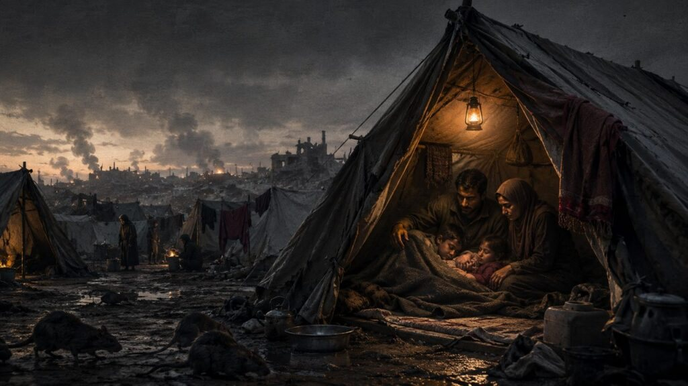

Gaza: w obozach atakują śpiące dzieci szczury. Mieszkańcy żyją w namiotach wśród chorób i ostrzałów
W obozach dla przesiedleńców w Gazie szczury atakują śpiące dzieci, szerzy się choroba, a zapasy są niszczone. Doniesienia z terenu pokazują skalę kryzysu humanitarnego.
Nawet formalne zawieszenie broni nie zatrzymało kryzysu humanitarnego w Strefie Gazy. W prowizorycznych obozach dla przesiedleńców szerzy się choroba, brakuje żywności, a szczury atakują śpiące dzieci. Doniesienia z terenu pokazują, że dla setek tysięcy cywilów przeżycie każdej doby pozostaje walką samą w sobie.
Zawieszenie broni, ale nie koniec cierpienia
Rozejm ogłoszony przez strony konfliktu w Strefie Gazy nie przyniósł mieszkańcom tego skrawka ziemi niczego, co przypominałoby normalność. Ostrzały trwają, a fala przesiedleń nie zatrzymała się. Dziesiątki tysięcy rodzin żyją w namiotach skleconych z folii, płacht i desek, bez dostępu do bieżącej wody, kanalizacji ani regularnych dostaw jedzenia. To nie jest obóz przejściowy. Dla wielu to nowa, przymusowa rzeczywistość na tygodnie i miesiące.
W takich warunkach pojawił się kolejny problem, który sam w sobie mógłby wywołać alarm sanitarny. Ze strefy docierają informacje o masowym namnożeniu się szczurów, które wchodzą do namiotów w nocy i atakują śpiące dzieci. Gryzą kończyny, niszczą skromne zapasy żywności, zatruwają wodę. Dla rodzin, które straciły dach nad głową, te ataki to kolejny cios, tym razem dosłowny.
W takich warunkach pojawił się kolejny problem, który sam w sobie mógłby wywołać alarm sanitarny.
Infekcje i brud. Prowizoryczne obozy jako wylęgarnia chorób
Masowe obozowiska bez infrastruktury sanitarnej to klasyczna pułapka epidemiologiczna. Brud, zagęszczenie, brak toalet, stojąca woda, szczury. Eksperci Światowej Organizacji Zdrowia od miesięcy alarmują, że w Gazie grozi wybuch chorób zakaźnych na dużą skalę. Infekcje dróg oddechowych, biegunki, a w dłuższej perspektywie ryzyko cholery czy duru brzusznego.
Dzieci są najbardziej narażone. Ich odporność, osłabiona niedożywieniem, załamuje się przy pierwszym kontakcie z zarazkami, które dla osoby dorosłej w normalnych warunkach byłyby jedynie uciążliwością. W obozach nie ma leków. Placówki medyczne albo przestały działać, albo same funkcjonują w warunkach polowych.
Reklamareklama w treści 300×250
Przesiedleńcy bez perspektyw. Skala bezdomności jest gigantyczna
Szacunki organizacji humanitarnych mówią, że w wyniku trwającego konfliktu i kolejnych fal ewakuacji swoje domy opuściła większość mieszkańców Strefy Gazy. Część z nich wróciła do zrujnowanych budynków, bo namiot w zimie jest jeszcze gorszym wyborem. Część nie ma już do czego wracać, bo zabudowania przestały istnieć.
Pomoc humanitarna dociera do Gazy z opóźnieniami i w ilościach daleko niewystarczających. Korytarze humanitarne otwierane są nieregularnie, konwoje zdarzało się zatrzymywać lub kierować z powrotem. Organizacje takie jak UNRWA czy Lekarze bez Granic apelują o stały, nieograniczony dostęp dla transportów z żywnością, lekami i materiałami sanitarnymi.
Głos z obozu
Świadectwa zbierane przez dziennikarzy i wolontariuszy są spójne. Matki opisują, jak budzą się w nocy na płacz dziecka i widzą szczura. Mężczyźni mówią, że każdego rana zaczynają od sprawdzania, czy cokolwiek zostało z nocnego zapasu chleba. Starcy siedzą przed namiotami i nie wiedzą, gdzie pójść.
Reklamareklama w treści 300×250
Formalnie trwa zawieszenie broni. W praktyce cywile w Gazie wciąż walczą o przetrwanie.
Co to oznacza i dlaczego warto patrzeć
Polska, jako kraj deklarujący zaangażowanie w pomoc humanitarną na świecie, uczestniczy w finansowaniu działań UNRWA i innych agend ONZ. Polska opinia publiczna ma prawo wiedzieć, na co idą te środki i czy są skuteczne. Dyskusja o warunkach w Gazie to nie tylko temat odległy geograficznie. Migracje wywołane przez konflikty zbrojne i kryzysy humanitarne docierają do Europy. To, co dzieje się dziś w namiotowych obozowiskach na Bliskim Wschodzie, w dającej się przewidzieć przyszłości może stać się argumentem i pretekstem do kolejnej fali presji migracyjnej na granice Unii Europejskiej, w tym na Polskę.
Twarda polityka wobec Brukseli i własne bezpieczeństwo graniczne to jedno. Jednak wypieranie się wiedzy o tym, co dzieje się z cywilami po drugiej stronie konfliktu, byłoby po prostu nieuczciwością. Polska racja stanu wymaga trzeźwej oceny faktów, a nie wybierania, które z nich są wygodne.
Reklamareklama w treści 300×250
Dzieci gryzzione przez szczury w namiotach to nie jest propaganda żadnej ze stron. To sprawozdanie z rzeczywistości.
Czytaj też
Wydarzenia
Zdewastowano grób ukraińskiego pisarza w Krakowie. Kijów: to prowokacja
Z nagrobka Bohdana Łepkiego na cmentarzu Rakowickim w Krakowie skradziono rzeźbę. Rzecznik MSZ Ukrainy ocenia to jako prowokację w
Wydarzenia
13 obywateli Indii zatrzymanych w Krakowie – nielegalnie przebywali w Polsce od miesięcy
Funkcjonariusze Straży Granicznej z Krakowa zatrzymali trzynastu obywateli Indii, którzy od niemal pięciu miesięcy nielegalnie prz
Wydarzenia
Ukraiński historyk porównał Polskę i Ukrainę do Francji i Niemiec. Stawką ma być Europa
Ukraiński historyk Jarosław Hrycak porównał pojednanie polsko-ukraińskie do zbliżenia Francji i Niemiec po II wojnie. Polska persp
Wydarzenia
„Jesteśmy gotowi przejąć odpowiedzialność za rządzenie” – liderka AfD w Budapeszcie
Viktor Orbán, premier Węgier, przyjął w Budapeszcie Alice Weidel, współprzewodniczącą Alternatywy dla Niemiec (AfD), która przyjec